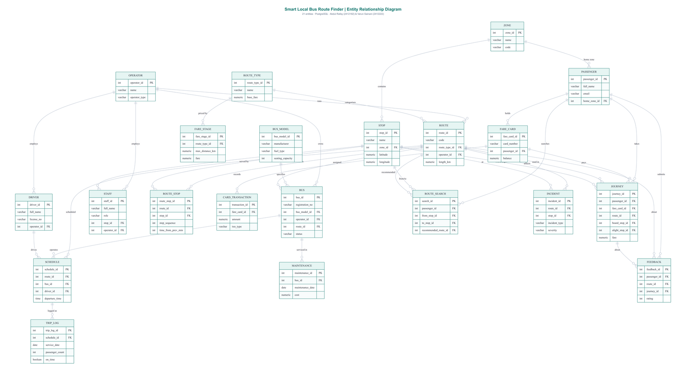
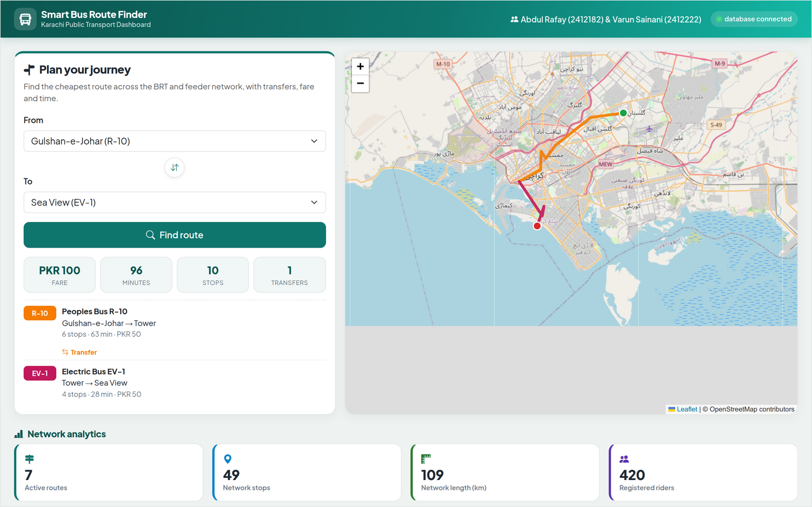
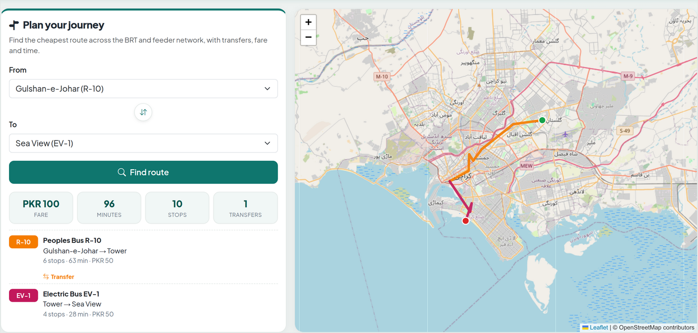

| Group | Examples |
|---|---|
| Analytics (13) | /api/analytics/summary, ridership-by-route, peak-hours, on-time-performance |
| Route finder | /api/finder/stops, /api/finder/plan?from=&to= |
| CRUD (8 resources) | GET, POST, PUT, DELETE on routes, stops, passengers, ... |


| Test | Result |
|---|---|
| Health and database connectivity | Passed (200) |
| 13 analytical endpoints | Passed (valid JSON) |
| CRUD round trip (POST, GET, PUT, DELETE) | Passed (201, 200, 200, 200) |
| Route finder with transfer | Passed (correct fare and time) |
| Invalid input handling | Passed (400 / 404) |